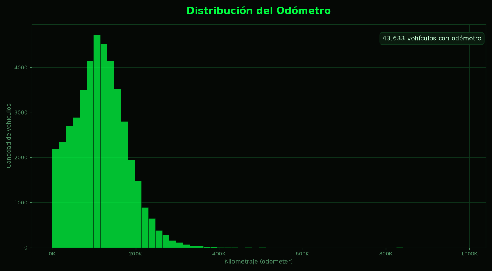
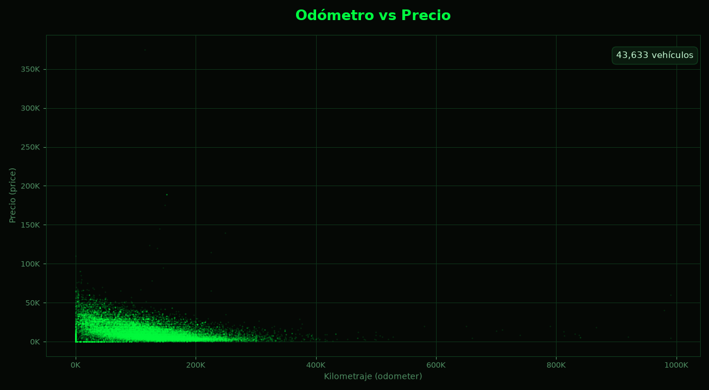
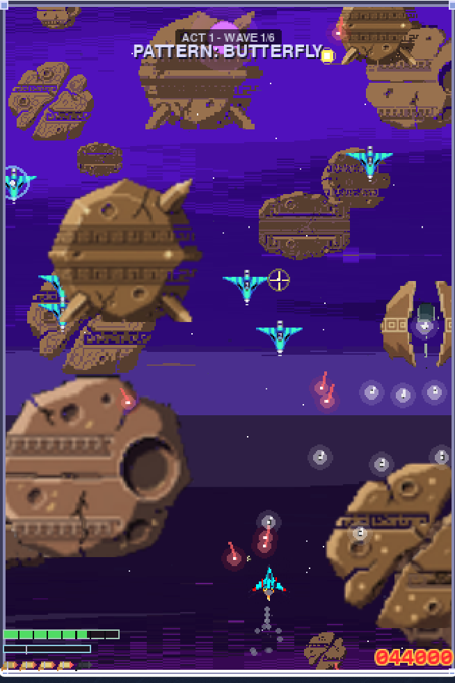

Bloque 1 de 5
SOBRE MI
Científico de datos con nueve años de experiencia componiendo y produciendo música: leer formas de onda con Ableton Live es, en el fondo, leer un histograma. Hoy aplico eso en Python y SQL sobre datos de producto, desde la definición del problema hasta la comunicación del hallazgo.
Busco rol como científico de datos junior en Latinoamérica, en remoto, dentro de audio tech, gaming o music streaming. Son los tres sectores donde mi perfil es asimétrico y no compito de tú a tú con el analista promedio del mercado.
Mi ventaja es que construyo, no solo analizo. Los tres proyectos de esta página son la evidencia: un dashboard con datos reales ya desplegado, y dos juegos completos en Python con suites de pruebas y versiones descargables. Todos se pueden abrir y comprobar.
Bloque 2 de 5 · Proyecto 1 · Datos
DASHBOARD SOBRE ANÁLISIS DE PRECIOS DE VEHÍCULOS
Objetivo
Hacer consultable el precio de los vehículos usados. Con 51.525 anuncios, la pregunta "cuánto vale uno" no se responde con un promedio, sino con la relación entre precio, odómetro y modelo.
El problema
El precio va de 1 a 375.000 USD y el odómetro de 0 a 990.000 km. En una tabla ese rango se lee como ruido: hacía falta una vista donde la relación entre las variables se viera de golpe.
Qué hice
Construí la aplicación en Streamlit con Plotly sobre los 51.525 anuncios de vehículos del dataset (precio, odómetro, modelo, año, condición, combustible, transmisión, tipo, color, 4x4 y fecha de publicación): el histograma del odómetro y la dispersión de odómetro contra precio, y publiqué el despliegue en un servidor público.
Resultado y aprendizaje
La aplicación está desplegada y se abre sin instalar nada, y sus dos visualizaciones están aquí, generadas con el mismo dataset que consume la app: no dependes de que el servidor esté despierto para ver el análisis. El hallazgo: el precio medio de los 43.633 vehículos con odómetro registrado es de 12.132 USD y cae de forma sostenida a medida que sube el kilometraje, que es exactamente la relación que no se ve en una tabla. El aprendizaje: un dashboard local no demuestra nada; uno con URL pública demuestra que lo sabes entregar.
Tecnologías utilizadas
Evidencias
Demo en vivo: se abre sin instalar nada. El servidor es de capa gratuita, así que la primera carga después de un rato de inactividad tarda unos segundos.
Repositorio con el código y el dataset: el CSV con las 51.525 filas está dentro, para que cualquiera pueda reproducir las dos visualizaciones.
Las dos visualizaciones de la app, generadas con el dataset público del repositorio: distribución del odómetro y dispersión de odómetro contra precio. De los 51.525 anuncios, 43.633 tienen odómetro registrado: esos son los que se pueden graficar.


La siguiente versión le agrega filtros por marca, condición y precio, y una tabla con los resultados filtrados.
Bloque 3 de 5 · Proyecto 2 · Juego
Void-Hunter
Objetivo
Explorar mis conocimientos en Python y pygame para crear videojuegos en los cuales poder albergar mi música para difusión y satisfacción propia.
Código mantenible, cada cambio verificado con pruebas y una versión nueva que alguien pueda descargar y jugar sin instalar Python.
El problema
La mayoría de proyectos personales de juego se quedan en "funciona acá". El reto era la entrega: que el código fuera verificable, que el ejecutable se pudiera regenerar y que la versión publicada fuera exactamente la que está en el repositorio.
Qué hice
Desarrollé Void-Hunter, un shooter vertical de pixel art: 9 escenas, 18 oleadas en actos de 6 y 4 jefes con máquina de estados, modo roguelike con semillas reproducibles y efectos de sonido sintetizados por el propio proyecto. Toda la música fue compuesta, escrita y diseñada por mí. También construí la suite de pruebas automatizadas, que hoy ocupa 102 módulos de test, y automatizé la construcción de los ejecutables de Windows para publicar cada bloque funcional como release.
Resultado y aprendizaje
La versión publicada hoy es la v1.7.2, con 443 commits acumulados y el ejecutable de Windows disponible para descargar. Cada release cierra con su propia tabla de verificación. El aprendizaje más caro: el bug que más me costó no era el que reventaba, sino el que calculaba el valor correcto y nunca lo dibujaba — la franja de fondo se animaba en cada frame y se descartaba al renderizar. Afinar el dibujado, no el cálculo, fue lo que lo arregló.
Tecnologías utilizadas
Evidencias
Captura del juego en marcha: la nave del jugador en el centro, las formaciones de enemigos y el HUD con las vidas y el puntaje.

Repositorio: el código, la suite de pruebas y las notas de cada release.
Release v1.7.2, del 25 de octubre de 2026: el zip de Windows para descargar y jugar, con su tabla de verificación.
Bloque 4 de 5 · Proyecto 3 · Juego
Stellar-Horizon
Objetivo
Construir un segundo juego con arquitectura propia, sin arrastrar las decisiones del primero. Esta vez me concentré muchísimo más en que se viera animado, y en que al menos cada cosa tuviera animación o movimiento (de así fueran 2 frames).
El problema
Void-Hunter ya tenía su arquitectura y su estilo. La pregunta era si podía hacer un juego horizontal, con un jefe final el cual tuviera nuevas mecánicas. Quería seguir desarrollando música, pero sin que se pareciera a Void-Hunter.
Qué hice
Desarrollé Stellar-Horizon, un shooter horizontal de pixel art de 16 bits: resolución interna de 480×270 escalada 4 veces a 1920×1080, un acto con 6 oleadas y un jefe final con máquina de estados de 5 acciones, anillos de mejora al estilo Star Fox 64 y banda sonora MIDI. Lo construí sobre un motor propio, con su sistema de colisiones, sus sprites y su suite de pruebas.
Resultado y aprendizaje
La versión publicada es la v1.7.2, con 109 commits, 514 pruebas automáticas en verde y el ejecutable de Windows en la release. El aprendizaje: decidir la resolución interna (480×270) y escalar en el render fue lo que hizo posible sostener 120 FPS en equipos modestos. La resolución es una decisión de arquitectura, no un ajuste gráfico.
Tecnologías utilizadas
Evidencias
Imagen de la escenografía y los diseños dentro del juego.

Repositorio: el motor, los sprites, la banda sonora y las pruebas.
Release v1.7.2: el ejecutable de Windows para descargar y jugar, y el detalle de las 514 pruebas en verde.
Bloque 5 de 5
CONTACTO
Si estás leyendo esto y hay una vacante de datos que encaja, escríbeme. Respondo en el día.
Bogotá D.C., Colombia · Disponible para remoto en LATAM · Mi otra cara profesional es la música: producción, mezcla y mastering desde 2017.